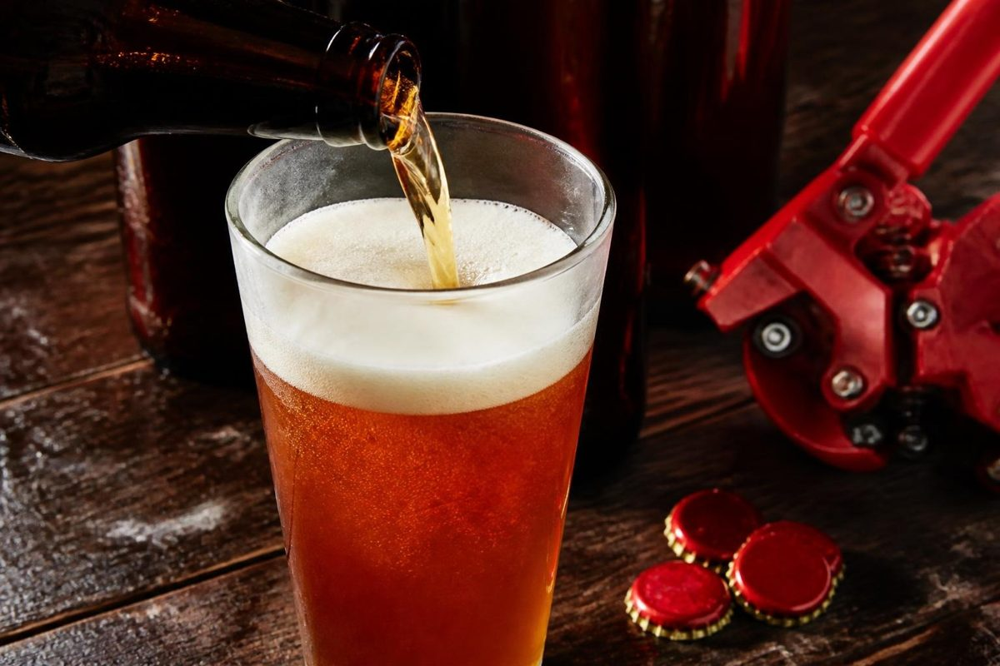
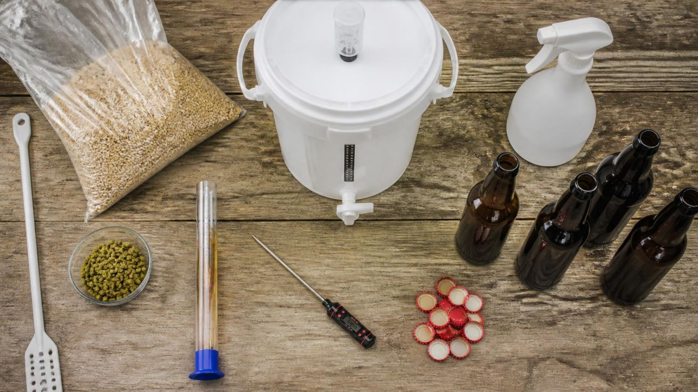
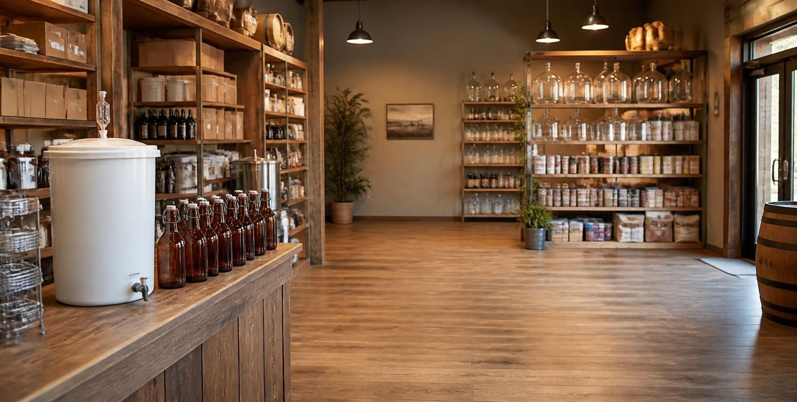

First time Beer Home Brewer
“I honestly cannot recommend this place enough, the guy was super helpful, not condescending at all.”Andrew · January 2026
Beer, wine, spirits & accessories · Bundaberg QLD
Beer, wine, cider and spirit flavourings, plus every kit, yeast, hop and bottle cap you need. Bundaberg's home brew shop since 1991, with real advice from people who actually brew.
Pick your poison
Choose a brew and tick off your shopping list. Bring it in and we'll fill the gaps.

Shopping list
Your first brew day
A standard 23 litre beer kit, start to finish. Easier than assembling flat pack furniture, and the reward is better.

Everything that touches the brew gets sanitised. This one step decides most of how your beer turns out.
10 minDissolve the kit and brew enhancer in hot water, then top up the fermenter with cool water to 23 L.
20 minCheck the temperature, take your starting gravity with the hydrometer, sprinkle the yeast and seal the lid.
OG readingKeep it steady and out of the Bundy heat. The airlock bubbles, then slows. Same gravity two days running means it's done.
7 to 10 days · 18 to 22°CAdd carbonation drops or priming sugar to each bottle, fill, and cap. Our capper makes this oddly satisfying.
FG readingLeave the bottles somewhere warm to carbonate, then move them to the fridge. Patience pays here.
2+ weeksBrewer's maths
Pop in your hydrometer readings. Original gravity (OG) is taken before you pitch the yeast; final gravity (FG) when fermentation finishes.
Estimate only, using the standard (OG − FG) × 131.25 formula. Standard drinks use the Australian measure of 10 g of alcohol.
From the locals
“I honestly cannot recommend this place enough, the guy was super helpful, not condescending at all.”Andrew · January 2026
“Doesn't matter if you are someone trying to get into home brewing or you have been doing it for years”Kyle · October 2025
“What more do you want?”rick · August 2025
“Awesome thanks 😊”Trisha · April 2025
Reviews from homebrewing.com.au

Come say g'day
100 Maryborough Street
Bundaberg QLD 4670
Bring your questions, your brew problems, even a bottle of your last batch for a second opinion. We've been helping Bundaberg brew at home since 1991.